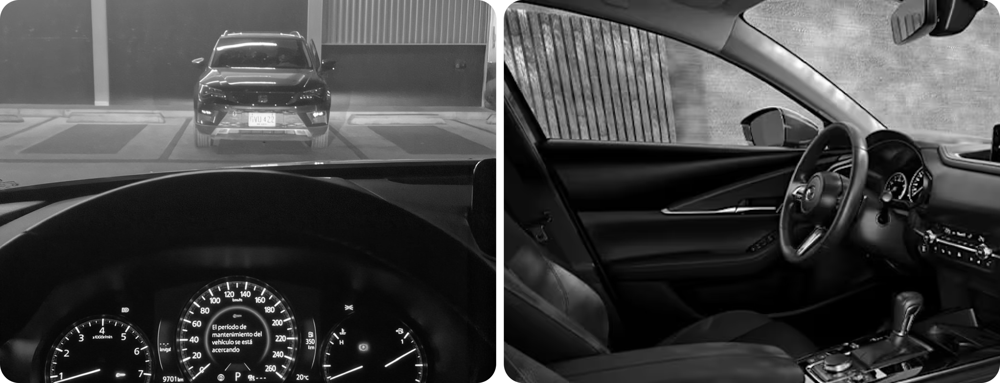

What my passion for cars taught me about designing experiences


A reflection on how my passion for cars led me to question UX rules and interpret them through the philosophy of each product.

One day, while sitting in traffic in my city, a question came to mind: what can I learn from one of my biggest interests, cars, and bring into my UX work? At first glance, they seem like very different worlds. But if you find experience design everywhere, you will probably understand why I ended up thinking about work while sitting in my car.
Alongside my work in UX, I am passionate about vehicles and enjoy driving. That is why automotive UX is one of the fields that interests me most beyond my work in fintech. I am interested in what happens between a person and a vehicle: how they understand its controls, what they need to do, how much attention they can give an interaction, and what they expect from the experience. As vehicles become more technological, those questions become especially interesting. Although I had not made that connection at the time, years earlier I had already had my first encounter with some of them.
My first encounter with design inside a vehicle
Before joining Mercado Libre, I worked in Colombia’s startup ecosystem. At one of those startups, I worked on Puntomóvil, a marketplace for people using premium mobility services. It was the only project from that stage of my career where I designed an application to be used inside a moving vehicle, with interaction conditions that changed because of the context:
- The application ran natively on a tablet connected to a hardware device inside the vehicle.
- To complete the experience, the passenger had to make a digital payment during the journey.
- The checkout could involve their personal device, such as scanning a QR code.
Our first prototypes were not very successful. Initial user feedback suggested that the experience was difficult to use.
Looking back today, one question matters much more to me than whether the screens looked good: how easy was it to complete that task in the real conditions of a journey?
We had a tablet, a personal phone, and a payment to complete inside a moving vehicle. That context was part of the experience we were designing.
The context of use matters. A lot.
Think for a moment about using your phone while sitting on the sofa, then imagine doing the same task while walking along a sidewalk. The screen may be identical, but your attention, your movements, and what is happening around you change. What seemed simple a moment ago starts to require more effort. The same thing happens inside a vehicle: a passenger trying to complete a payment and someone driving have very different responsibilities and attention available.
For the driver, the main task is driving. Checking directions, adjusting the temperature, or changing a song are interactions that have to coexist with that responsibility.
That is why automotive UX calls for more than asking whether an interface is intuitive. We also need to consider how much it demands looking at a screen, how precisely someone needs to touch a control, and what happens if they make a mistake.
Attention is limited in any experience. Behind the wheel, however, the stakes can extend far beyond an unfinished task or a frustrated user.
That is one reason I find this field so interesting: it forces us to look at design within the situation where it is actually used.
We do not all expect the same thing from a vehicle
Context alone does not explain the whole experience. What someone expects from it matters too. As a car enthusiast, I find two approaches to mobility useful when thinking about these differences:
- Enjoying driving: for people who see being behind the wheel as part of a vehicle’s value.
- Wanting to get somewhere: for people whose priority is reaching their destination comfortably and easily.
I do not see these as fixed categories. The same person can enjoy a weekend drive on an open road and want to forget about driving after an hour in Monday traffic. Even so, those different expectations change the design questions. When driving is part of the enjoyment, the response of the controls, the information the vehicle communicates, and the sense of connection with the machine matter. If you simply want to get somewhere, you will probably care more about how much effort it saves you and how comfortable it makes the journey.
That is why I like observing the decisions different brands make: which controls they keep within reach, which functions they move to a screen, and what role they give the person in the experience. A minimalist cabin can look attractive at first glance. The question that interests me comes next: how does it feel to use when you need to do something specific?
What happens when the vehicle can drive for us?
Autonomous mobility adds another layer to this conversation. If some of the driving task moves to the vehicle, what the person can do and what they expect during the journey also change. I am especially interested in how that will coexist with the pleasure of driving. Would I want to hand over control when stuck in traffic? What about when I am on a road I enjoy? How should the experience change between those two moments?
Rather than trying to predict which brands will stop investing in driving, I am interested in understanding how both possibilities could coexist.
For someone like me, who enjoys being behind the wheel, the challenge is preserving what makes driving special while also recognizing when it would be valuable to stop doing it.
That is a design problem I find fascinating.
What I bring back to my UX work
Returning to the question I asked myself in traffic: what can I bring from my experience as a car enthusiast into UX?
- My main lesson was to stop looking at product decisions through the lens of “this is the rule that applies.” As a UX designer, I used to think that applying heuristics, UX laws, or fixed rules without questioning them in a specific context made me a good professional. Seeing how an automotive brand’s design decisions follow its vision or its flagship product made me question whether the same logic was really ideal for every product. What would our world be like if every user experience were exactly the same?
- Who is our user, and what do they expect from our product? This seems obvious, yet we often fall back on generic descriptions. If you think a vehicle’s user is simply someone who needs transportation, you are taking an overly simple view. How would you explain the differences between the experience of a Toyota and a Mercedes? Bringing that into our daily work, what makes your brand different from another similar one?
- An experience happens as much outside an interface as within it. As UX designers, we know this, but the automotive world helped me understand what it means in practice. Seeing how something as simple as interacting with a touchscreen can become complex while driving helped me grasp the scale of the idea that a user’s attention is the most precious resource for anyone designing interfaces.
Looking at the automotive world helps me revisit these conclusions. What about you: has an interest of yours changed the way you think about the products you work on?
I would love to hear about your experience. If you want to talk about design, UX, or vehicles, get in touch anytime.
Take care!